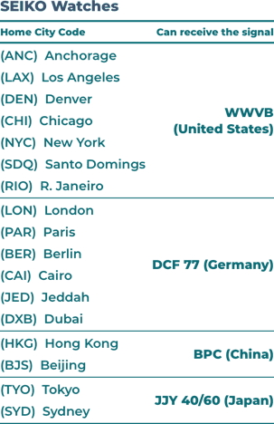

Q:
Which signal should I choose?
A:
Select the corresponding signal according to the watch's Home Time City setting.
Please refer to the watch manual to select.
*If your manual is missing, please contact us in "Settings", we provide free search service.
Common table below:
